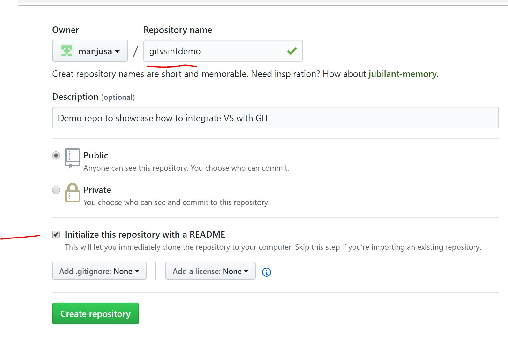
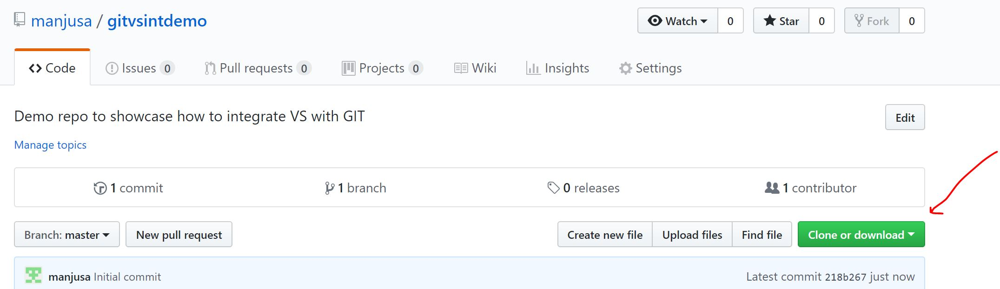
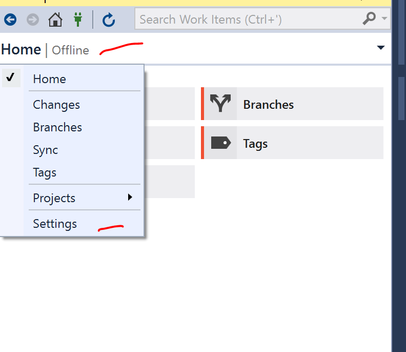

Using Visual Studio 2017 with GIT
In this blog am going to take you through step by step process to integrate VS 2017 with GIT repository.I will also let you know how to create a git repository etc
Software Used:- Visual Studio 20l7
- Creating GIT Repository
- Using GIT in VS2017
- Creating a dummy project and staging,commiting the changes
- Pusing the changes to the repository
- Common errors faced and fixes
- Create a folder in you local machine where you will do the development.I created a folder named "GITVSDemo" in C:\ drive
- Loginto you git hub account(https://github.com/) . Create an accouunt if you dont have one
-
After successfully logging into the github account, Create a
repostiory by clicking on "New Repository" button.Also,give name
of the repo. (eg gitvsintdemo)
 - Ensure above that you create the repo with a "readme" file.This will ensure that a file is created when you create the repo itself
-
Now,once the git repository is created, just check the url of
the repo.You can click the "clone" button and get the URL of the
repo like shown below
 - Now,lets open IDE i.e VS2017 (or the version you have installed).We will also create a project and integrate it with GIT.The source code of the project will be checked into the git repository we created above
-
Click on Team Explorer and then click on Home/Offline and click
on settings
-
Now click on Settings-→Offline and Manage Connections
 -
Open command prompt on windows and go to the dev
folder("GITVSDemo" in C:\ drive) and type in "git status"
Doing above,confirms that it is still not a git repository -
Now back to VS, and Click on "clone"
-
Cloning will create a .git folder in the dev folder("GITVSDemo"
in C:\ drive).Also, "git status" will confirm that this folder
is now tracked by git repo
-
Create a project in the development folder ("GITVSDemo") we
created.I created a project named "Test1"
Type in "git status" again and you will see that "test1" needs to be added -
Go to Home -→Settings → Repository Settings --> remote
repositories -->Remote
-
Ignore the files you dont want to commit. Eg .vs
folder,orobj/debug folder etc.Basically anything you dont want
to be part of the commited code can be ignored by right clicking
the folder and "ignore changes""

-
"Stage" and "commit" the changes
Once changes are "staged" you will see them in the "stage changes section" -
Once changes are staged and commited, "Push" to the repo
Common Errors Faced and Solutions:
- Issue 1: I was pushing the code to repository (in VS 2017), I was getting an error with error code 403 Solution to above problem is simple.Ensure that you follow these steps
-
The reason for the error was that earlier I was logged into
github using another account and later I changed the github
account. However VS never prompted for the change of github
account because it stores the github user id and password in the
registry. To fix the issue, go to start and click "run" and then
type in the command "rundll32.exe keymgr.dll,KRShowKeyMgr"
Running above command will open "Stored username and passwords" entry and remove the entry for github
Once you remove the entry,then try pushing the commited changes to the repo again then you will see that github box to enter user id and password is prompted.
So above are the steps to integrate VS with GIT repository.Hope you liked this blog and if you have any queries or comments or feedback please share below or contact me through contact me option on home page..:-)